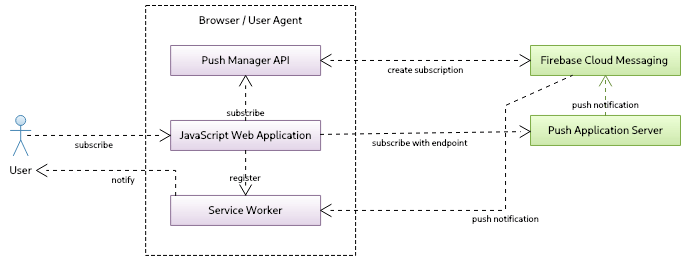
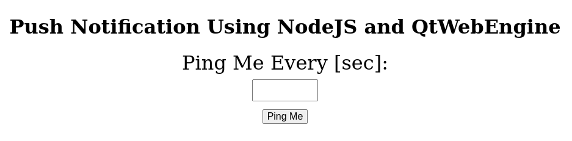
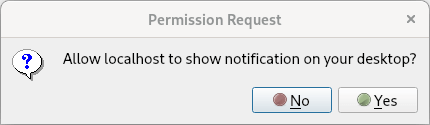
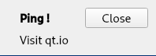

WebEngine Push Notifications Example
Demonstrates how to subscribe to and unsubscribe from push notifications.
In this example we are going to send push notifications from a web push service to the user. This is the typical scenario where messages are sent from the application server i.e. website back-end through a 3rd-party push service, to finally arrive at the user's browser in form of notifications. To demonstrate this flow, we will implement a simple push service server application, to which the user can subscribe to receive ping messages.
As already mentioned, in such a workflow there are three different parties involved:
- the user's web browser where they receive push notifications
- 3rd-party push service, which is defined by a subscription endpoint and is a part of a browser's push service implementation
- application server, which will store user's subscriptions and initiate push messages using a subscription endpoint
The user visits a website, where a JavaScript web application uses the JavaScript Push API to create a push notification subscription. The user is then asked to grant a permission to receive and display push notifications. Once accepted, the Push API establishes a push channel with a 3rd-party push service, which in case of QtWebEngine is Firebase Cloud Messaging (FCM). The unique push subscription is created that includes the subscription endpoint URL. The browser then sends a subscription message to the application server forwarding the endpoint setup. The application server can now use the subscription endpoint to send notifications to the browser. The browser push service implementation will deliver a push message. However, to show it, a service worker must be registered. As the service worker runs in the background, it allows displaying notifications even if a website, which has installed it, is no longer opened.

Let's go more into implementation details. We start with implementing our custom push service using NodeJS with two modules:
- web-push - provides the web-push protocol implementation
- express - provides the web application framework
Let's initialize a new project and install the required modules in the root directory of this example:
npm init -y npm install web-push express
These commands should create package.js, which defines the start command:
"start": "node server.js"
Now let's move on to the push service back-end implementation in server.js.
We start by including the required modules and doing basic express framework setup, which we use to create our custom push server. For simplicity we are going to handle only one subscription at a time. To do that we need to create VAPID keys which we are going to generate with web-push libs. The public key is going to be used by the front-end and authenticate to the service.
const express = require('express');
const webpush = require('web-push');
// setup server
const port = 5000;
const server = express();
server.use(express.json());
server.use(express.static('content'));
// we support only one subscription at the time
var subscription = null;
// setup vapid keys
const vapidKeys = {
publicKey :
"BNO4fIv439RpvbReeABNlDNiiBD2Maykn7EVnwsPseH7-P5hjnzZLEfnejXVP7Zt6MFoKqKeHm4nV9BHvbgoRPg",
privateKey : "HqhrzsRfG5-SB3j45lyUmV7cYZuy-71r2Bb0tgaOefk"
};
// set vapid keys for webpush libs
webpush.setVapidDetails('mailto:push@qt.io', vapidKeys.publicKey, vapidKeys.privateKey);
Note: We are not going to cover the encryption of messages in this example.
To generate keys, we can use the tool shipped with web-push lib, that is installed by npm in our example's root directory.
./node_odules/.bin/web-push generate-vapid-keys
Now we add two routes to the push server. One to subscribe and one to unsubscribe, so that our front-end can send an HTTP POST request to handle the push subscription. In the subscribe request we will get subscription in the request body and we also retrieve the custom header ping-time that defines how often the ping messages should be pushed to the user. We keep around the subscription to be able to send push notifications later. As a confirmation, we send the 201 status code and schedule the first push notification based on the ping-time value. The unsubscribe request simply removes a subscription.
// add subscribe route
server.post('/subscribe', (req, res) => {
// subscription request
subscription = req.body;
const delay = req.headers['ping-time'];
console.log('Got subscription with endpoint: ' + subscription.endpoint);
console.log('Ping delay is at: ' + delay);
// confirm resource created
res.status(201).json({});
// schedule notification
setTimeout(() => { sendNotification(delay) }, delay * 1000);
});
// add unsubscribe route
server.post('/unsubscribe', (req, res) => {
console.log('Got unsubscribe with endpoint: ' + req.body.endpoint);
subscription = null;
res.status(201).json({});
});
The sendNotication() function sends push messages using the web-push lib. We create the payload with the message we want to present to a user and schedule the next push message.
function sendNotification(delay)
{
if (!subscription)
return;
// create payload text
const payload = JSON.stringify({ title : 'Ping !', text : 'Visit qt.io', url : 'www.qt.io' });
// send notification
console.log('Sending notification !');
webpush.sendNotification(subscription, payload).catch(err => console.error(err));
// schedule next notification
setTimeout(() => { sendNotification(delay) }, delay * 1000);
}
In the end we start the server to listen on the given port.
server.listen(port, () => console.log(`Push server started at port ${port}`));
Let's move now to our front-end. We create a simple page index.html, where the user can enter how often they want to receive ping notification messages. We will have two buttons: Ping Me to subscribe for push notifications and Clear to unsubscribe. In the end we load ping.js, which we cover next.
<body>
<h1>Push Notification Using NodeJS and QtWebEngine</h1>
<div id="app">
<div id="ping-setup">
<form>
<div>
Ping Me Every [sec]:
</div>
<div class="ping-input">
<input type="number" name="seconds" min="0" max="3600" required="">
</div><button>Ping Me</button>
</form>
</div>
<div id="ping-clear">
<div id="ping-text"></div><button id="ping-clear-button">Clear</button>
</div>
</div>
<script src="ping.js"></script>
</body>
The last piece is creating the logic for the push subscription within the front-end. Here we have two functions, setup and clear, to handle subscriptions. When the user clicks on the Ping Me button, setup is called. To be able to receive notifications, the service worker is needed. This way the user can leave the website and still get notified as the service worker works in the background and handles incoming messages. To achieve that, we have to first register one with:
const register = await navigator.serviceWorker.register('/worker.js', { scope : '/' });
The call to cpushManager.subscribe() will trigger a permission prompt, which is displayed to the user. If the permission is granted, the push subscription is returned. It includes a URL endpoint that allows sending notifications to the browser, where the registered service worker waits for push messages.
var subscription = await register.pushManager.subscribe(
{ userVisibleOnly : true, applicationServerKey : publicVapidKey });
As mentioned the subscription is created for FCM and should be now sent to our custom server with an HTTP POST request. In addition, we add to the post request the HTTP header with the ping-time the user entered on our website.
await fetch('/subscribe', {
method : 'POST',
body : JSON.stringify(subscription),
headers : { 'content-type' : 'application/json', 'ping-time' : delay }
});
The function clear call unsubscribes first from our push server by sending an HTTP POST request and later from the 3rd-party push service (FCM).
const register = await navigator.serviceWorker.getRegistration();
var subscription = await register.pushManager.getSubscription();
...
await fetch('/unsubscribe', {
method : 'POST',
body : JSON.stringify(subscription),
headers : { 'content-type' : 'application/json' }
});
...
await subscription.unsubscribe();
The rest of code in ping.js is just boilerplate code to read a user provided value and call setup() or clear().
As the last part of the front-end let's look inside a service worker script, where we simply register an event listener for push events.
self.addEventListener('push', event => {
const data = event.data.json();
self.registration.showNotification(data.title, { body : data.text });
});
When a push event comes we simply use the Notification JavaScript API to display a notification.
Note: QtWebEngine Notification Example shows how to provide your own handler and customize the look and feel of a notification message.
Having the implementation in place, we can start the server on localhost at the port 5000. To do that, we can simply enter in the console in the project's root directory:
npm start
Now we can look into the push-notification browser application, which is based on WebEngine Notifications Example:
int main(int argc, char *argv[]) { QCoreApplication::setOrganizationName("QtExamples"); QApplication app(argc, argv); const QString name = QString::fromLatin1("push-notifications.%1").arg(qWebEngineChromiumVersion()); QScopedPointer<QWebEngineProfile> profile(new QWebEngineProfile(name)); QWebEngineView view(profile.data()); auto popup = new NotificationPopup(&view); QObject::connect(view.page(), &QWebEnginePage::featurePermissionRequested, [&](const QUrl &origin, QWebEnginePage::Feature feature) { if (feature != QWebEnginePage::Notifications) return; view.page()->setFeaturePermission(origin, feature, QWebEnginePage::PermissionGrantedByUser); }); profile->setPushServiceEnabled(true); profile->setNotificationPresenter([&](std::unique_ptr<QWebEngineNotification> notification) { popup->present(notification); }); view.resize(640, 480); view.setUrl(QUrl("http://localhost:5000")); view.show(); return app.exec(); }
This application simply opens the page at http:\\localhost:5000. We are not going into detail about how to open a notification as it is documented here. However, you need to modify the application in two ways. First, QWebEngineProfile cannot be set to off-the-record because push messaging would be disabled. Therefore, as you can see above, QWebEngineProfile is initialized with the name. Second, you need to enable push messaging with the call QWebEngineProfile::setPushServiceEnabled for the created profile.
When the application runs it displays:

After granting the permission we can send our ping request:

We should see the coming push notification:
